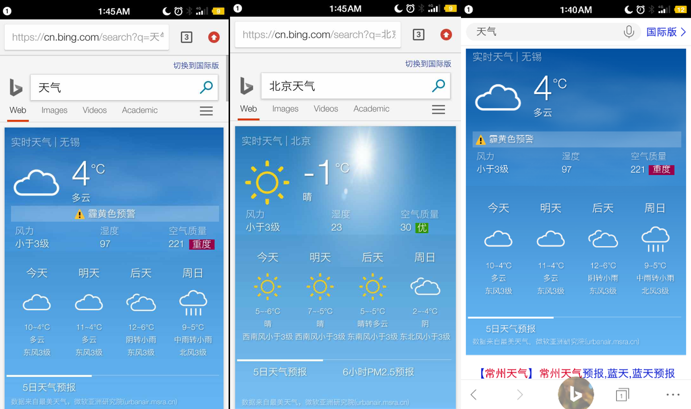
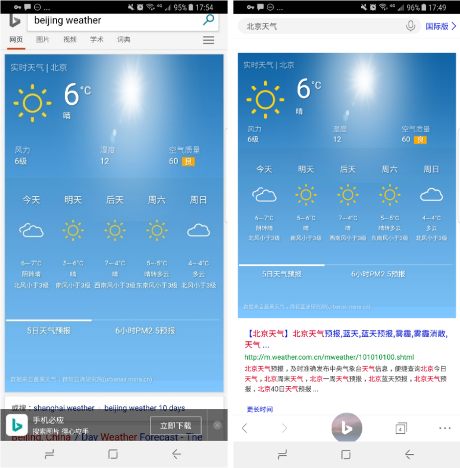
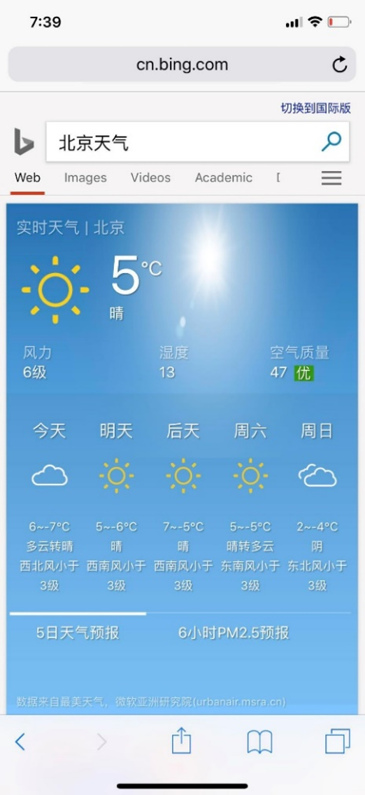
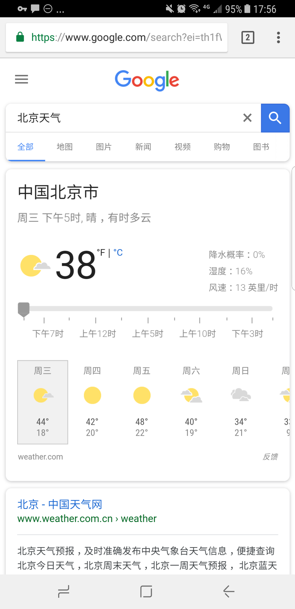
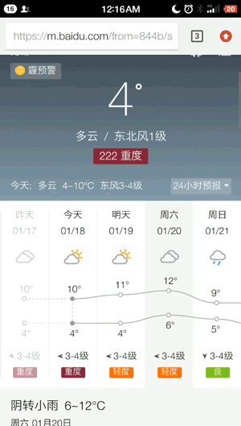
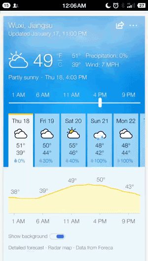

I searched weather both on browsers and the Bing App on 3 different sizes of phones.
01 Smartism T2 / Portrait Dimensions: 1080 x 1920 pixels

Chrome+天气 | Chrome + 北京天气 | App + 天气
⓪ A responsive mistake. The screen of smartism t2 is relatively small and I believe that caused some responsive mistake: The weather forecast only shows four days but it still says 五日天气预报.
① Consistency of searching results. When I search Beijing weather the 6小时PM2.5预报 is available. However, the button disappeared when I changed the city to Wuxi. The button just gone and left a vacancy.
② Aligning. I guess aligning is also another responsive problem. 霾黄色预警 didn’t align to centre on the first version. The bar of 五日天气预报 and 6小时天气预报 didn't divide equally. (May be it has its reasons and I didn't get it yet)
③ Inconformity of backgroud and time. As you can see I am searching this at the midnight (yes 1:45 AM, I love working at night). But the background with a beautiful shiny halo gives me a sudden feeling of midday. I glanced at the window, it is still dark outside. After the misunderstanding of the midday and midnight, when I look at the weather focast of "today", I am really confused it means today literally or the day that just passed. I guess under this circumstance a date showing with weather result is needed.
④ Static screen. The screen is static and few buttons are clickable. I thought there are many interesting ways to interact with it but the dates, weather icons, temperatures and pm2.5 figures are all static and unclickable. I had some expectations swiping and clicking but nothing showed up.
02 GALAXY S8 / Portrait Dimensions:1440 x 2960 pixels

Chrome+Beijing weather| App + 北京天气
⓪ Galaxy s8 has a long and wide screen. It is wide enough to show five days weather forecast so the responsive mistake it gone. The layout is slightly different between the Chrome one and app one.
03 iPhone X / Portrait Dimensions: 2436*1125 pixels 1080 x 1920

Chrome+Beijing weather| App + 北京天气
⓪ As you seem the iphone x's screen is really long. The halo in the background is distorted and the longer screen make the distortion worse than the previous versions. The halo looks like a squeezed poached egg.
① It said today the weather is 多云转晴 in Beijing. Sunny or cloudy is both pretty okay for me, merely having a difference. But imagine if someone is going to go out for shopping and he/she searched weather on mobile phone, the answer is 晴转雨, he/she doesn't know when it is going to rain. He/she has to turn to other weather forecast apps for detailed information of the coming rain.
However, when I check the 6小时PM2.5预报, the curve is steady, having subtle fluctuations. Personallys speaking I think the change of weather within a day is more important than the change of PM2.5 since me and my friends would check weather twice a day but we wouldn't do that for PM2.5. Weather can change drastically very often but pm2.5 usually doesn't.
● COMPETITIVE ANALYSIS
How does the competitors’ weather result look like?
A competitive analysis was done to get an overview of similar applications what else were available for users.
01 Google

Chrome + Google + 北京天气
⓪ The icons are clean and neat. The date shows clearly. I could see the change of weather within a day. The buttons are clickable. The shadow of button was compelling you to click them and interacting with them. I like it.
02 Baidu

Chrome + Baidu + 北京天气
⓪ Its background is dark like night. It feels right. (Or may be it is just trying to show the severe haze today.)
① Baidu shows the current date, weather, the wind direction and wind speed, the visualization of the highest and lowest temperature ... The information is abundant. But it is over delievered somehow. I tried to locate some specific information but it took me a relatively long time to figure the whole interface out. Too much information can also make distraction sometimes.
② As the gif shows, as I select a day in future, the window pulled up and the detailed information of the designated day showed up. I like the interaction personally. But still it looks unnatural since the window pulled up on an constant speed. And it might be a redundancy for a webpage-based weather result.
03 Bing国际版

Chrome + Baidu + 北京天气
⓪ It is my favorate version. The information are clear. I got my city, time and weather change within a day. Also, redundacies and distractions are gone.
① When I open it, the background is the dark and starry night. As I move the time bar, different sky according to time is there. I don't have to look at the exact weather word. The feeling of images and signs are direct. The feeling is intuitive. Users get to know the weather at the sudden when they see the background. Besides, controlling the bar is like control time itself. It is beautiful, useful and playful.
● A QUICK INTERVIEW
How do the users think? And what is the specific scenarios when they search weather?
I asked two friends of mine to describe a time that they searched weather on mobile phone. The question was open and caused some discussion on weather. I managed to dig out some purposes, frustrations, expectations and scenes when they were searching weather on the phone.
⓪ Geng, 21, student, using ios system
"I check weather of two cities, almost once a day from the ios weather app. My mother lives in Baoding and I live in Wuxi. The app is convenient enough to use. I never thought of searching weather on mobile phone. And I only check weather for the weather conditions now (including a few hours from now, I think he means). Speaking about that, who cares about future?"
① Fan, 50, teacher, using Android system
"I check weather everyday. I jog everyday, and when weather is bad, I don't jog. I used to search weather from phone, on Baidu, to get the weather forecast and get prepared. But these days I found a pre installed weather app on my phone (She said she didn't download that herself). The app works well and saves time for me."
2 OHTER OBSERVATIONS
⓪ Users. The users are the people who hasn't get a weather app installed or feel like searching from Bing is better and faster.
① The background.Performance is changing over time. The relationship between time and weather are subtle yet important. Time changes, then weather changes. Besides, I believe any new system will benefit from being interconnected (as opposed to isolated), distributed (as opposed to centralized), and interactive (as opposed to static).
Thus, I prefer the buttons of dates and time should be clickable. The background (at least the colours and lightness) would be better if it changes according to the selected time (for example: dark background for the night and light background for the day.)
③ Cultural and environmental facts. We use °C instead of °F; We care about PM2.5 and the quality of air; We use "~" for "to" more than "-"
④ The optimization and visualization of information. Firstly, there are some information that are unnecessary and should be deleted from the interfaces. Secondly, some information (for example:西北风小于三级) is hard to understand and perceive, since I have to think where is west and where is north and then I start to imagine what is 三级? How strong is the wind exactly? The process is kind of confusing to me. When would “多云转晴” happen?
3 THE DESIGN CONCEPT
4 REFLECTIONS
- Talk to users early and often. The idea of User-centred is quite vital and important.
- Simplifying designs and reducing unnecessary features is a good thing.
- I used "周四" "周五" "周六" instead of "今天" "明天" . But I am not sure which one is better and it needs time and testing to figure out. I use the former one because I am a nightbird and I sometimes would misunderstand "今天" when a day passes at midnight. But the latter one might be better as well.
see 🌞 exercise celebrity
:00,
,
Beijing